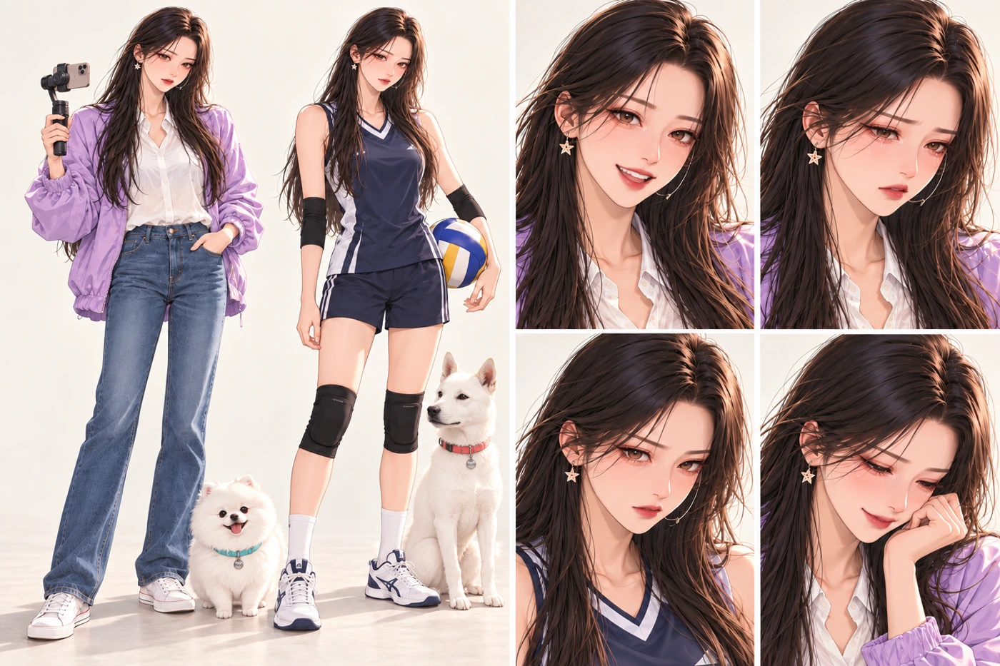
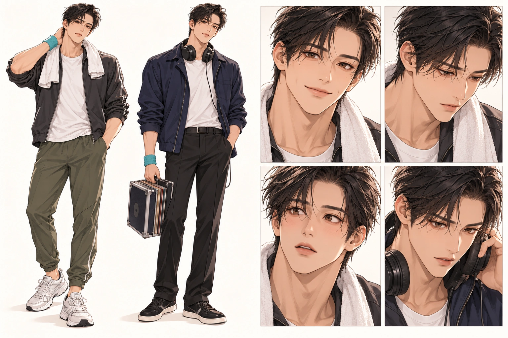
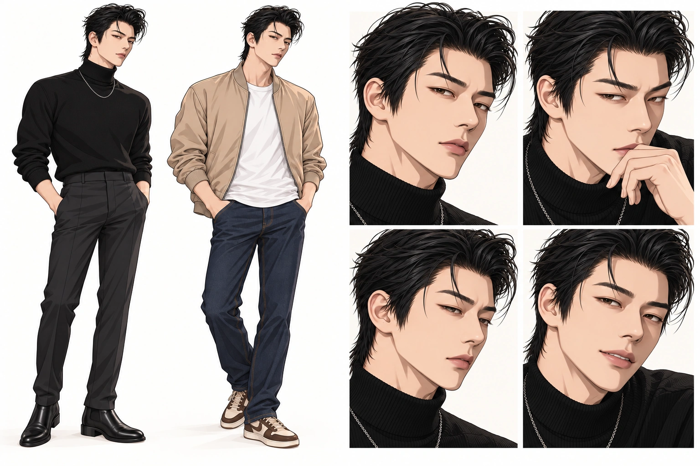
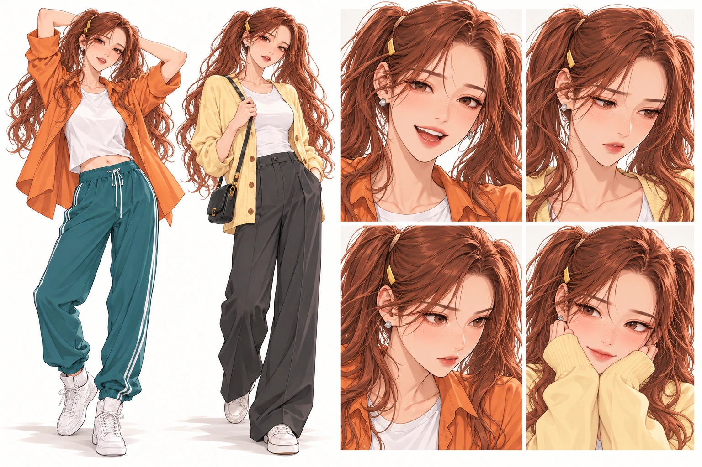

진하늘과 출연진 캐릭터 디자인. 새로운 이야기는 이 전용 특별관에서 이어집니다.
진하늘 Jin Haneul
선수에서 크리에이터로

청소년 국가대표 세터 → 부상과 재활 → 대학·여행 방송 →100만 크리에이터. 승인된 얼굴을 유지하고 배구 연습복과 라일락 여행복을 함께 제안합니다. 두부·뽀뽀는 청록/코랄 목줄로 구별합니다.
이종민 Lee Jongmin
다시 자기 무대를 찾는 사람

전 아이돌 · 프로 헬스 트레이너 · DJ. 짧은 검은 머리와 길고 각진 얼굴, 차콜 운동복과 네이비 DJ룩. 하늘의 진심을 알아보며 과거의 죄책감에서 벗어납니다.
김상만 Kim Sangman
좋아하는 마음을 존중하는 사람

하늘을 향한 마음을 정리한 뒤 유채의 춤과 삶을 새롭게 알아봅니다. 사용자 사진을 바탕으로 이마를 드러낸 검은 뒤넘김 머리, 길고 좁은 눈매, 또렷한 광대와 턱선으로 재설계했습니다. 검은 터틀넥·실버 체인과 베이지 바머의 두 가지 의상입니다.
유채 Yuchae
자기 박자를 지키는 사람

22세 · 172cm · 48kg · 70D. 압구정 댄서·댄스학원 강사이자 버스킹·유튜브 댄스 BJ·유명 틱톡커. 긴 구릿빛 양갈래 머리와 옅은 주근깨, 주황/청록 댄스룩. 거절 후에도 자신을 지키며, 이후 상만의 새로운 제안을 자기 뜻으로 받아들입니다.